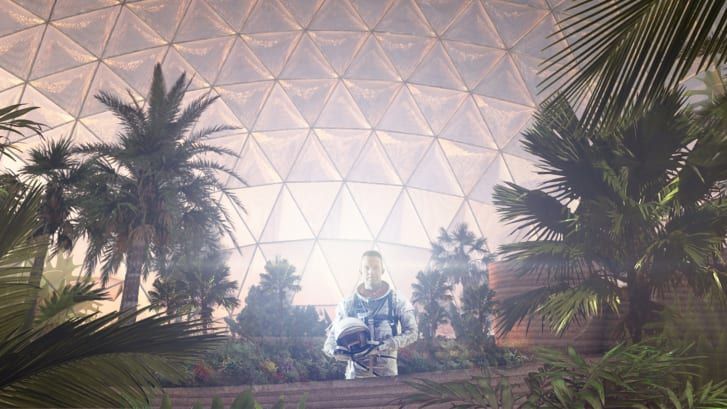

Dubai is a city where firefighters use jetpacks, archipelagos are built from scratch, and buildings climb into the clouds; a slick metropolis in the middle of a vast red desert. First-time visitors would be forgiven for thinking they had stumbled onto a film set for a sci-fi movie.
Now Dubai is set for what must be its most other-worldly architectural project yet.
In 2017, the United Arab Emirates announced its ambition to colonize Mars within the next 100 years. But architects are already imagining what a Martian city might look like -- and planning to recreate it in the desert outside Dubai.
Mars Science City was originally earmarked to cover 176,000 square meters of desert -- the size of more than 30 football fields -- and cost approximately $135 million.
Intended as a space for Dubai's Mohammed Bin Rashid Space Centre (MBRSC) to develop the technology needed to colonize Mars, architects Bjarke Ingels Group were asked to design a prototype of a city suitable for sustaining life on Mars -- and then adapt it for use in the Emirati desert.
How to build a Martian city
For this unique commission, the architects first had to overcome the immense challenges of creating a design to make the inhospitable environment of Mars habitable.
Mars has a thin atmosphere and no global magnetic field, so there's little protection from harmful radiation. Temperature is another problem -- the average on Mars is a chilly -63 degrees C (-81 degrees F). The thin atmosphere also means there's little air pressure, so liquids quickly evaporate into gas; despite freezing temperatures, an unprotected human's blood would boil on Mars.

Bjarke Ingels Group's design for Mars Science City. Credit: Dubai Media Office
But according to Jonathan Eastwood, director of the Space Lab at Imperial College London, who's not connected with the Dubai project, the challenges of living on Mars extend far beyond technicalities.
"I think the biggest challenge in terms of a sustained presence on Mars is not the engineering [or scientific] challenge, but the human [and] personal one," Eastwood explained.
"So not just to answer the question about how do you survive, but how do you thrive?"
Martian vernacular architecture
Hoping his design will allow for the latter, Jakob Lange, partner at Bjarke Ingels Group, explained to CNN how he and his team plan to overcome the challenges posed by the Red Planet.
To maintain a comfortable temperature and habitable air pressure, the Martian city would be made up of pressurized biodomes each covered with a transparent polyethylene membrane. Oxygen, made by applying electricity to underground ice, would fill each biodome.
Inside a biodome. Credit: Bjarke Ingels Group
As the population on Mars grows, biodomes would be joined together to form villages and eventually form cities in the shape of rings, or "toruses."
The city would be powered and heated using solar energy, and the thin atmosphere could actually help the domes maintain their temperature.
"Since there is very little atmosphere on Mars, the heat transfer will be very low, meaning that the air inside the domes will not cool down as fast as it would on Earth," said Lange.
Buildings would be 3D printed under the domes, using Martian soil, and rooms would extend 20 feet underground, protecting from harmful radiation and meteors.
The unearthly design even becomes a little playful in places. "In the future on Mars, you would have skylights in your underground cave that would be like aquariums, with fish swimming around," said Lange. The water-windows would shield the residents from radiation while allowing light to enter the underground rooms.

The water-filled skylights also feature in BIG's designs for the Earth-bound Science City. Credit: Bjarke Ingels Group
No longer bound by Earth's physics, Martian architecture can take on a whole new form.
"There is approximately one-third gravity which means that you can suddenly make columns that are [slimmer] and [have] longer spans of structures," Lange said. "It creates almost like a completely new rule set that you have to follow when designing architecture in space."
According to Eastwood, the design meets the challenges posed by Mars. "I think [these design elements] definitely [are] part of the key infrastructure for a long-term presence," he said. "The idea of gradually shielding [from radiation] is sensible [...] The idea of water windows is quite elegant."
MBRSC says the Science City is still in the concept stage, and that it hasn't yet settled on a design or architect for the final build, but BIG has already worked out how it would adapt its proposal for the Dubai desert, if selected.
On Earth, domes wouldn't need to be pressurized or filled with oxygen, and buildings would be 3D-printed from desert sand rather than Martian soil. But the water skylights would still be present, and it would also be powered by solar energy.
In BIG's design, as well as research labs, Mars Science City will contain an educational facility, museum, an amphitheater, and co-working office space.
As yet, there's no timeline for when construction will begin, or when it will open, but MBRSC says it is currently conducting a detailed study of the specifications, which it will use to develop a revised budget and size for the site.
Dreaming of Mars
Mars Science City is only one part of the ambitious space program run by Dubai's Mohammed Bin Rashid Space Centre. Last year it sent its first astronaut into space; this summer it will launch a probe to Mars, and in November it will undertake its first-ever analog mission.

The UAE's Mars Hope Probe is set to reach Mars in February 2021. Credit: MBRSC
The eight-month venture will take place in Russia and one Emirati crewmember will be chosen as part of an international team of six. The mission will test the effects of isolation and confinement on mental and physical health.
Other places on Earth used to mimic conditions for space missions include Antarctica's Concordia Station, used to simulate isolation, California's Mojave Desert, which NASA has used to test Mars rovers, and the Moroccan Sahara, used by the European Space Agency as a Mars analog.
The MBRSC hopes that, in future, such research could take place in Mars Science City.
"This is going to be our platform where we can develop the science [and] the technology that will help us in our future missions to Mars," said Adnan AlRais, Mars 2117 Program Manager at MBRSC. "We want to come up with a totally new facility that will help the international community."
To reach its goal of colonization in less than a century, the MBRSC acknowledges enthusiasm for space travel will have to pass down multiple generations. It hopes Mars Science City will inspire the next generation to dream of life on the Red Planet enough to make it a reality.